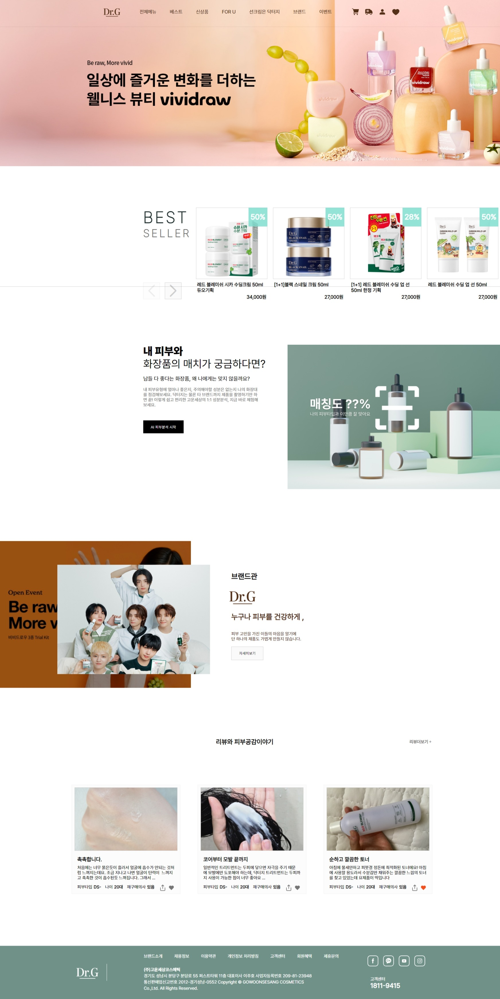
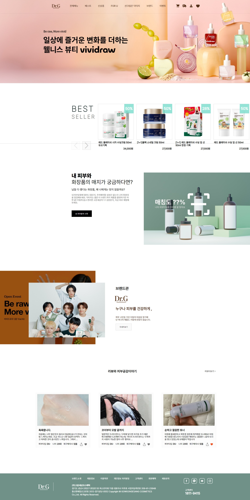
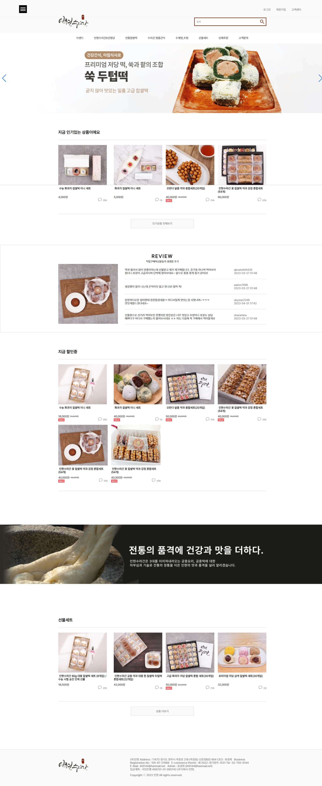
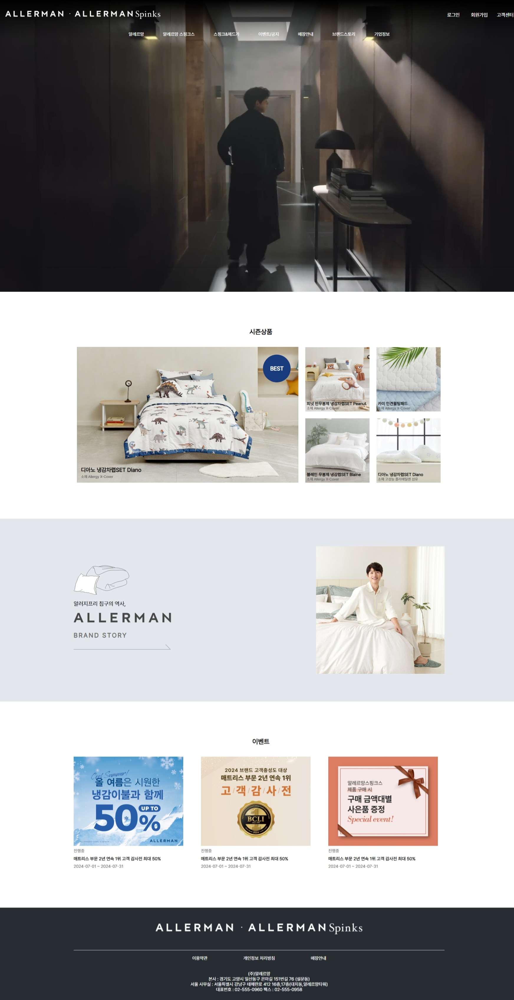
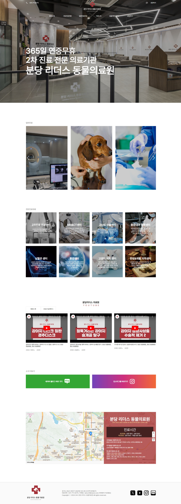

X 27 X 27
X 27 X 27


닥터지
 

편안하고 믿을 수 있는 이미지를 심기위해 주색을 푸른빛이 도는 초록색과 갈색으로 선정하였으며 여백을 넉넉히 잡아 보는이의 편의성을 높였습니다.
구현페이지:main,sub1(AI피부분석) *본인 기여도100%*
이솝

기존 사이트의 어색한부분을 삭제하고, 여백을 조정하여 리디자인 하였습니다.
구현페이지:main,sub1(로그인) *본인 기여도100%*
나이키

운동선수들을 위한 스포츠 기업이라는 점에서 착안하여 액티브하고 자유로운 느낌으로 리디자인 해 보았습니다.
구현페이지:main *본인 기여도100%*
인현수라간

기존 웹사이트의 여백 교정, 상품이 좀더 보일 수 있게끔 구간을 나누어 보았습니다.
구현페이지:main,sub1,sub2(제품페이지+상세페이지 2가지) *본인 기여도100%*
알레르망

알레르망만의 장점을 한눈에 볼수있게 메인에 동영상을 배치해 보았으며, 깔끔한 느낌을 살려 리디자인 했습니다.
구현페이지:main,sub(로그인,회원가입,브랜드스토리 등등) *본인 기여도100%*
리더스동물의료원

24시간 진료한다는 점을 강조하고, 기존 사이트의 복잡했던 부분을 덜어내고 미니멀하게 디자인했습니다.
구현페이지:main, *본인 기여도100%*
크몽

주색을 사용하여 사이트 특유의 느낌은 살리면서도 미니멀하게 리디자인 해 보았습니다.
구현페이지:main,sub(상품상세,상세페이지는 인용) *본인 기여도100%*
케이스티파이

메인에는 제품컷, 하단에는 사용자 리뷰를 배치하고 콜라보를 많이한다는점을 살려 바로 볼 수 있는 버튼을 배치 해 보았습니다.
구현페이지:main,sub(정치) *본인 기여도100%*